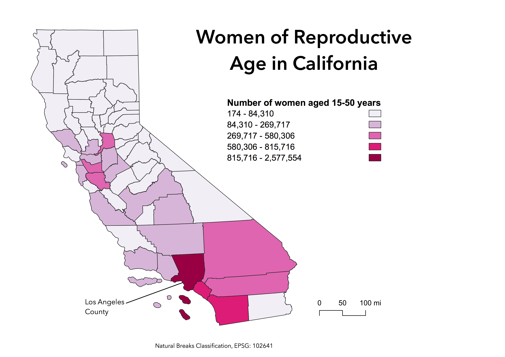

Homework 7: Census data choropleth
In this assignment students learn to download tabular data from census.data.gov, clean csv data tables, and join tabular data to shapefile data in QGIS. Students are asked to create choropleths of the dataset using 3 different classification modes in QGIS.

Data used for this project
Link to cleaned csv dataset on GitHub
Link to geoJSON on GitHub